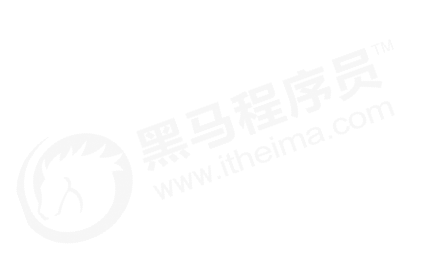
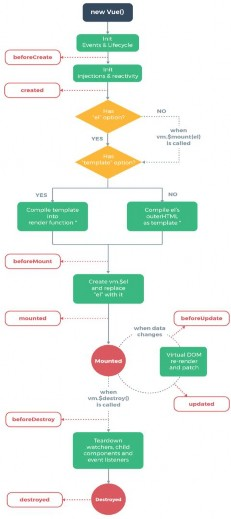
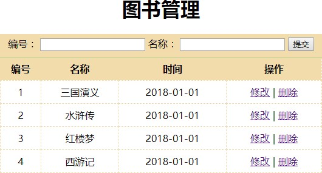
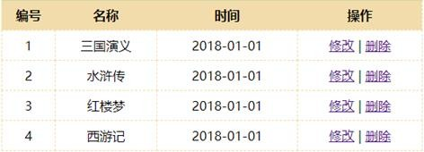
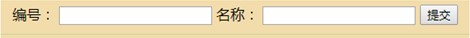
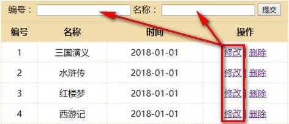
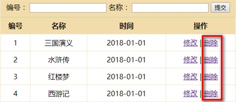

Vue概述
Vue基本使用
Vue模板语法
基础案例
Vue常用特性
综合案例

目


Contents



表单操作
自定义指令
计算属性
侦听器
过滤器
生命周期


Send an email
*
*
Name
Email Address
Phone Number
*
Your Message
器
Submit

服务器
Input 单行文本
textarea 多行文本
select 下拉多选
radio 单选框
将表单数据提交到服务
checkbox 多选框


number：转化为数值
trim：去掉开始和结尾的空格
lazy : 将input事件切换为change事件
<input v-model.number="age" type="number">


内置指令不满足需求
Vue.directive('focus' {
inserted: function(el) {
// 获取元素的焦点
el.focus();
}
})
<input type="text" v-focus>


Vue.directive(‘color', {
inserted: function(el, binding) {
el.style.backgroundColor = binding.value.color;
}
})
<input type="text" v-color='{color:"orange"}'>


directives: {
focus: {
// 指令的定义
inserted: function (el) {
el.focus()
}
}
}


表达式的计算逻辑可能会比较复杂，使用计算属性可以使模板内容更加简洁
computed: {
reversedMessage: function () {
return this.msg.split('').reverse().join('')
}
}


计算属性是基于它们的依赖进行缓存的
方法不存在缓存


侦听器
数据一旦发生变化就通知
侦听器所绑定方法
数据
侦听器绑
定方法

数据变化时执行异步或开销较大的操作
watch: {
firstName: function(val){
// val表示变化之后的值
this.fullName = val + this.lastName;
},
lastName: function(val) {
this.fullName = this.firstName + val;
}
}


 案例：验证用户名是否可用
案例：验证用户名是否可用
需求：输入框中输入姓名，失去焦点时验证是否存在，如果已
经存在，提示从新输入，如果不存在，提示可以使用。


案例：需求分析
① 通过v-model实现数据绑定
② 需要提供提示信息
③ 需要侦听器监听输入信息的变化
④ 需要修改触发的事件


格式化数据，比如将字符串格式化为首字母大写，将日期格式化为指定的格式等
Vue
过滤器
hello
Hello


Vue.filter(‘过滤器名称’, function(value){
// 过滤器业务逻辑
})
<div>{{msg | upper}}</div>
<div>{{msg | upper | lower}}</div>
<div v-bind:id=“id | formatId"></div>
filters:{
capitalize: function(){}
}


Vue.filter(‘format’, function(value, arg1){
// value就是过滤器传递过来的参数
})
<div>{{date | format(‘yyyy-MM-dd')}}</div>


案例：使用过滤器格式化日期
y:年,
M:年中的月份(1-12),
d:月份中的天(1-31),
h:小时(0-23),
m:分(0-59),
s:秒(0-59),
S:毫秒(0-999),
q:季度(1-4)
2018-11-15T09:20:15.004Z
2018-09-27
将时间格式化为 yyyy-MM-dd 格式


挂载（初始化相关属性）
① beforeCreate
② created
③ beforeMount
④ mounted
更新（元素或组件的变更操作）
① beforeUpdate
② updated
销毁（销毁相关属性）
① beforeDestroy
② destroyed



① beforeCreate 在实例初始化之后，数据观测和事件配置之前被调用。
② created 在实例创建完成后被立即调用。
③ beforeMount 在挂载开始之前被调用。
④ mounted el被新创建的vm.$el替换，并挂载到实例上去之后调用该钩子。
⑤ beforeUpdate 数据更新时调用，发生在虚拟DOM打补丁之前。
⑥ updated 由于数据更改导致的虚拟DOM重新渲染和打补丁，在这之后会调用该钩子。
⑦ beforeDestroy 实例销毁之前调用。
⑧ destroyed 实例销毁后调用。
Vue概述
Vue基本使用
Vue模板语法
基础案例
Vue常用特性
综合案例

目


Contents



案例：图书管理


案例：补充知识（数组相关API）
变异方法(修改原有数据)
push()
pop()
shift()
unshift()
splice()
sort()
reverse()
替换数组(生成新的数组)
filter()
concat()
slice()


案例：补充知识（数组响应式变化）
修改响应式数据
Vue.set(vm.items, indexOfItem, newValue)
vm.$set(vm.items, indexOfItem, newValue)
① 参数一表示要处理的数组名称
② 参数二表示要处理的数组的索引
③ 参数三表示要处理的数组的值



 案例：图书管理
案例：图书管理
图书列表
实现静态列表效果
基于数据实现模板效果
处里每行的操作按钮



 案例：图书管理
案例：图书管理
添加图书
实现表单的静态效果
添加图书表单域数据绑定
添加按钮事件绑定
实现添加业务逻辑


案例：图书管理
修改图书
修改信息填充到表单
修改后重新提交表单
重用添加和修改的方法



 案例：图书管理
案例：图书管理
删除图书
删除按钮绑定事件处理方法
实现删除业务逻辑



 案例：图书管理
案例：图书管理
常用特性应用场景
过滤器（格式化日期）
自定义指令（获取表单焦点）
计算属性（统计图书数量）
侦听器（验证图书存在性）
生命周期（图书数据处理）